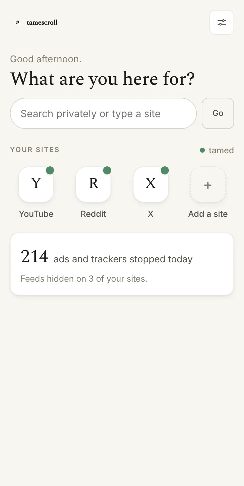
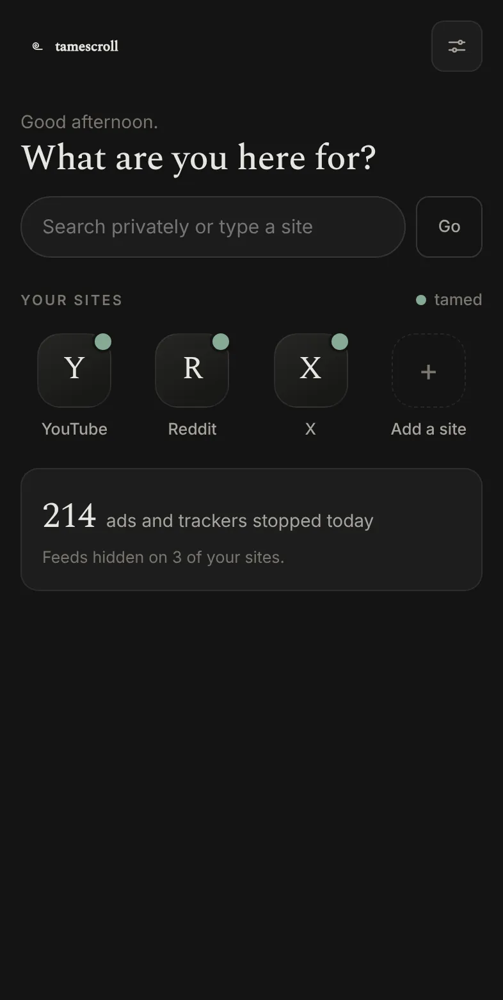
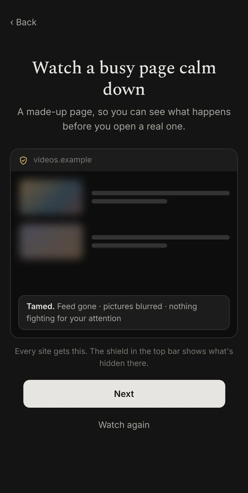
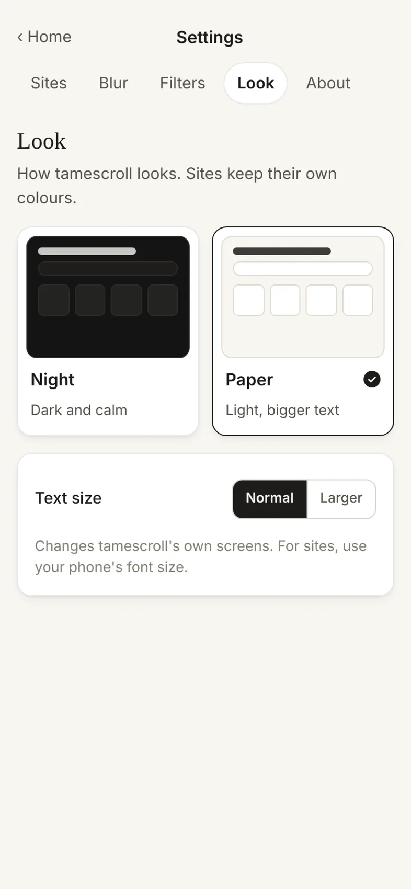
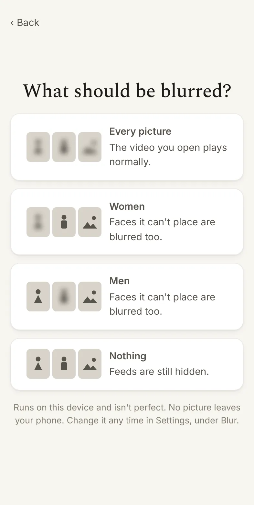
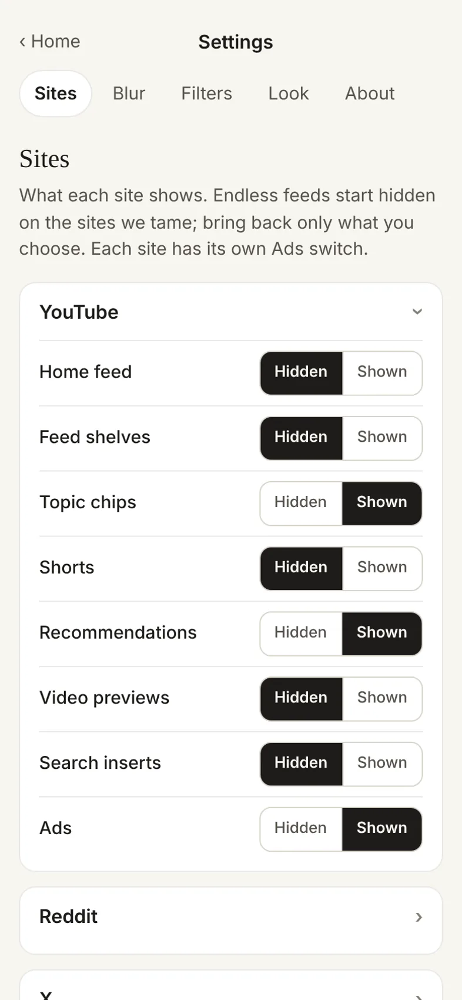
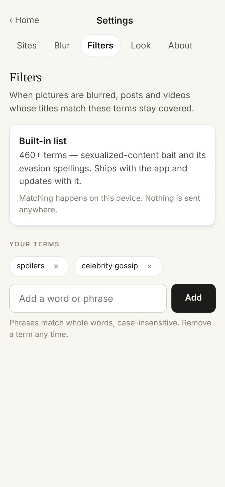

The web,
without the feeds.
tamescroll is a web browser that opens any site and quietly tames the busy ones. Endless feeds fold away, pictures can be blurred right on your phone, and you get to what you came for while the rest stays quiet.


Everything a browser does, minus the pull.
Search, type an address, open a link from a friend. tamescroll works like the browser you know, with a gentle layer on top.
Go anywhere, privately
Search or type any address, and keep the sites you use as tiles. Searches go to DuckDuckGo with safe search set to strict, and trackers are blocked as you browse. tamescroll never suggests a site to you.
Feeds fold away
On the busy sites we tame, the endless feed, short-video shelves and "recommended for you" rows are hidden before you see them. Bring any of them back, per site, with one switch.
A shield on every page
A plain bar sits on top of every site: home, the address, and a shield that shows what was hidden there and opens that site's settings.

See it before you startThe first run calms a made-up page in front of you, so nothing is a surprise.
Set it up once. It stays the way you like it.
Every switch is plain, labelled and yours. Nothing changes behind your back, and nothing you choose leaves your phone.

Night or Paper
Two looks, picked by tapping a picture of each, and a larger-text switch for older eyes and bright rooms.

Pictures, your way
Blur every picture, women, men, or nothing. It runs on your phone and isn't perfect, and we say so.

Each site, your way
Bring back only what you want, one switch at a time, for each site on its own.

Your own filters
Add words you'd rather not run into. Posts and videos whose titles match stay covered, on every site.
These screens follow your phone's light or dark setting, like this page.
Watch what you came for, then go.
YouTube is one of the sites tamescroll tames. You still get search, your subscriptions and the videos you pick, without the parts that pull you into the next one.
A usual visit
- A home feed picked to keep you watching
- A shelf of short videos that never ends
- Previews that play as you scroll past
- Prompts to install the app and sign in
In tamescroll
- Search and your subscriptions, front and centre
- The home feed and short videos hidden until you want them back
- Thumbnails blurred by your rules, if you like
- Ads blocked if you want: ads show as usual until you turn on that site's Ads switch
You watch YouTube's own website, with your own account if you sign in. The videos themselves play as their creators published them. YouTube is a trademark of Google LLC; tamescroll is independent and is not affiliated with or endorsed by Google or YouTube.
Built to let you go, not to keep you.
A calm browser has to be trustworthy too. Here is what that means for tamescroll, in plain words.
Stays on your phone
Hiding, blurring and filtering all happen on your device. Nothing you see is copied, saved or sent to us.
No account, no tracking
There is no sign-up, no analytics and no advertising ID. We have no server that your phone talks to.
Open source
Every line is public under the MPL-2.0 licence, so every claim on this page can be checked.
Nothing to sell you
No ads of our own, no purchases, no subscriptions. We earn nothing from the time you spend here.
How tamescroll works with websites
It shows each site's own page. tamescroll loads the same public web page your phone's browser would, and changes how it looks on your screen, like a reader mode or a content blocker.
It never touches anyone's app or code. No other app is modified, no site's API is used, and nothing is downloaded or re-uploaded.
A few sites get extra care. YouTube, Reddit, X, Instagram, Facebook and TikTok are built around feeds, so we keep rules for each that hide those parts. They carry a "Tamed" mark on your home screen.
The picture filter keeps nothing. It looks at what is on screen, decides whether to blur it, and forgets it. It does not identify anyone or store faces.
tamescroll is an independent, open-source project. It is not affiliated with or endorsed by Google, YouTube, Reddit, X, Meta or TikTok; their names are used only to say which sites tamescroll works with. If you represent a website and have a concern, write to tamescroll@proton.me and we will answer. Read our privacy policy and terms of use.
Good to know
Is tamescroll really free?
Yes. There is nothing to buy, no subscription and no account. tamescroll is open source, so you can also read the code or build it yourself.
Where do my searches go?
To DuckDuckGo, with safe search set to strict. tamescroll has no server, so it keeps no record of what you search, and trackers are blocked as you browse.
Can I sign in to my accounts?
Yes. You sign in on each site's own sign-in page, with your own account, the same as in any browser. tamescroll never sees, stores or sends your passwords, and each site's own terms apply to your account.
Does tamescroll block ads?
Only where you want it to. Every site has its own Ads switch. On YouTube ads show as usual until you turn that switch on; on most other sites blocking starts on, and you can turn it off. Ads help pay for the sites and creators you enjoy, so the choice is yours.
What does the picture blur look at?
The pictures and previews on the page in front of you, and nothing else. A small model on your phone decides whether to blur each one, then forgets it. You choose what it covers: every picture, women, men, or nothing, and faces it can't place are blurred too. It runs on your phone and isn't perfect. The video you choose to watch plays normally.
Which sites does it work on?
Any website. Ad blocking and the picture blur work everywhere. Six feed-heavy sites (YouTube, Reddit, X, Instagram, Facebook and TikTok) also get their own rules that hide the feeds, and those rules update over the internet as the sites change.
Is tamescroll part of YouTube, Reddit or the others?
No. tamescroll is an independent, open-source project with no connection to any of the sites it works with.
Is there an iPhone or computer version?
Android comes first. Versions for iPhone and for computers are being built.
Take the web back.
Download tamescroll for Android. It installs in a minute and updates itself from inside the app.
Android 7 and newer. The download is an APK from our GitHub releases; your phone asks once to allow installs from this source.